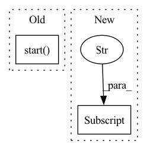

Pattern ID :11988
Before Change
repository.save(labels_filenames[i], labels)
// When
training_loss, validation_loss, test_loss = training.start( batch_size, validation_split, test_split)
// Then
self.assertTrue(training_loss > 0.0)
self.assertTrue(validation_loss > 0.0)After Change
// Then
configuration_id = list(losses["training_loss"].keys())[0]
self.assertTrue(losses["training_loss"][configuration_id][grid_search_dictionary["epochs"][0]] > 0.0)
self.assertTrue(losses["validation_loss"] [configuration_id][grid_search_dictionary["validation_period"][0]] > 0.0)
self.assertTrue(losses["test_loss"][configuration_id] > 0.0)
for i in range(dataset_size):
os.remove(tests_data_path + dataset + "/" + features_filenames[i])In pattern: SUPERPATTERN
Frequency: 4
Non-data size: 2
Instances Fragment ID: 40528879
Project Name: kovanostra/message-passing-neural-network
Commit Name: 78302a5dddf0e7625a290619654dccf4ef75cce1
Time: 2020-04-27
Author: kovanostra@gmail.com
File Name: tests/usecase/test_grid_search.py
M Class Name: TestTraining
N Class Name: TestTraining
M Method Name: test_start_for_multiple_batches_of_the_same_size(1)
N Method Name: test_start_for_multiple_batches_of_the_same_size(1)
M Parent Class: TestCase
N Parent Class: TestCase
M File Name: tests/usecase/test_grid_search.py
N File Name: tests/usecase/test_grid_search.py
M Start Line: 17
M End Line: 43
N Start Line: 18
N End Line: 49
Before Change
repository.save(labels_filenames[i], labels)
// When
training_loss, validation_loss, test_loss = training.start( batch_size, validation_split, test_split)
// Then
self.assertTrue(training_loss > 0.0)
self.assertTrue(validation_loss > 0.0)After Change
losses = grid_search.start()
// Then
configuration_id = list(losses["training_loss"] .keys())[0]
self.assertTrue(losses["training_loss"][configuration_id][grid_search_dictionary["epochs"][0]] > 0.0)
self.assertTrue(losses["validation_loss"][configuration_id][grid_search_dictionary["validation_period"][0]] > 0.0)
self.assertTrue(losses["test_loss"][configuration_id] > 0.0) Fragment ID: 40528891
Project Name: kovanostra/message-passing-neural-network
Commit Name: 78302a5dddf0e7625a290619654dccf4ef75cce1
Time: 2020-04-27
Author: kovanostra@gmail.com
File Name: tests/usecase/test_grid_search.py
M Class Name: TestTraining
N Class Name: TestTraining
M Method Name: test_start_for_multiple_batches_of_differing_size(1)
N Method Name: test_start_for_multiple_batches_of_differing_size(1)
M Parent Class: TestCase
N Parent Class: TestCase
M File Name: tests/usecase/test_grid_search.py
N File Name: tests/usecase/test_grid_search.py
M Start Line: 50
M End Line: 76
N Start Line: 57
N End Line: 88
Before Change
}
}
})
responses.start()
responses.add(
method=responses.GET,
url=http_url,
body=resp_msg,After Change
self.assertEqual(response.code, 200)
self.assertEqual(len(response_json["events"]), 1)
self.assertEqual(len(response_json["responses"]), 1)
self.assertEqual(response_json["events"] , [
{"event": "slot", "timestamp": None, "name": "KAIRON_ACTION_RESPONSE",
"value": "I have failed to process your request"}])
self.assertEqual(response_json["responses"][0]["text"], "I have failed to process your request") Fragment ID: 40528892
Project Name: digiteinfotech/kairon
Commit Name: 6c833d552206afb3058cdb0b4755f4c489085ab3
Time: 2021-09-13
Author: pandey.udit867@gmail.com
File Name: tests/integration_test/action_service_test.py
M Class Name: TestActionServer
N Class Name: TestActionServer
M Method Name: test_http_action_failed_execution(1)
N Method Name: test_http_action_failed_execution(1)
M Parent Class: AsyncHTTPTestCase
N Parent Class: AsyncHTTPTestCase
M File Name: tests/integration_test/action_service_test.py
N File Name: tests/integration_test/action_service_test.py
M Start Line: 116
M End Line: 133
N Start Line: 153
N End Line: 159
Before Change
if not delay:
self.tool.update_online_pred()
if self.signal_rec is None:
with R.start(experiment_name=self.signal_exp_name, recorder_name=self.exp_name, resume=True) :
self.signal_rec = R.get_recorder()
pred = []After Change
artifacts_key="pred",
)
online_results = online_collector()
signals = online_results["pred"]
old_signals = self.get_signals()
if old_signals is not None and not over_write:
old_max = old_signals.index.get_level_values("datetime").max() Fragment ID: 40528880
Project Name: microsoft/qlib
Commit Name: 84c56f13bd47ee45ae50ec74c5a154295cf55a43
Time: 2021-05-05
Author: lzh222333@163.com
File Name: qlib/workflow/online/strategy.py
M Class Name: RollingAverageStrategy
N Class Name: RollingAverageStrategy
M Method Name: prepare_signals(3)
N Method Name: prepare_signals(3)
M Parent Class: OnlineStrategy
N Parent Class: OnlineStrategy
M File Name: qlib/workflow/online/strategy.py
N File Name: qlib/workflow/online/strategy.py
M Start Line: 263
M End Line: 277
N Start Line: 277
N End Line: 285